Édition du 2026-11-20
Process Intelligence : pizzeria TakeAway
Découverte des processus, modèles BPMN et analyse quantitative — M2 MIAGe IPM FA, année 2026/2027.
Rapport final réalisé avec Open Process. Les fichiers sources fournis sont conservés ; les modèles restent modifiables dans le logiciel.
Synthèse
L’étude distingue deux unités : 327 cas de commande observés dans les journaux événementiels et 463 lignes de vente dans les feuilles Sales. Aucune clé commune validée ne permet de confondre ces populations ni d’identifier des clients uniques.
| Indicateur descriptif | Résultat |
|---|
| Cas événementiels / canaux | 327 / 3 |
| Ventes enregistrées | 463 |
| Chiffre d’affaires enregistré | 6 795,00 u.m. |
| Coûts enregistrés | 5 420,00 u.m. |
| Bénéfice calculé (CA − coûts) | 1 375,00 u.m. |
| KPI 1 — part du bénéfice dans le CA | 20,24 % |
| Satisfaction moyenne / observations | 2,73 / 460 |
| KPI 2 — satisfaction renseignée | 99,35 % |
Le canal Internet concentre le volume de l’échantillon. Les profils de semaine et les segments de clientèle sont descriptifs : les fichiers ne donnent ni dates complètes, ni identifiant de personne, ni unité monétaire, ni barème documenté pour la satisfaction. Les propositions de pilotage restent conditionnelles à ces limites.
| Demande du sujet | Réponse fournie |
|---|
| Découvrir les trois modes | Trois BPMN expliqués, issus des journaux corrigés |
| Intégrer les modes | Un BPMN global connecté, choix du canal et fin commune |
| Organisation et information | Couloirs, affectations observées, objets et magasins de données documentés |
| Quantifier l’activité | Comptages, finances, profils hebdomadaires, géographie, satisfaction et palmarès |
| Proposer deux KPI | Part du bénéfice dans le CA et taux de satisfaction renseignée |
| Restituer et contrôler | Rapport PDF/HTML, modèles OPX/BPMN/SVG, CSV et contrôles reproductibles |
1. Sources, périmètre et méthode
Le sujet demande initialement ProM et BizAgi. À la demande du commanditaire de ce travail, les opérations de découverte et de modélisation ont été réalisées dans Open Process, avec les fonctions nécessaires ajoutées au logiciel. Python sert à l’analyse indépendante, aux figures et à la publication du rapport. Aucun résultat n’est présenté comme une sortie de ProM ou de BizAgi.
Les CSV du répertoire clean constituent la référence comportementale. Les feuilles événementielles des classeurs Counter et Phone sont antérieures à ces corrections ; les classeurs restent utilisables pour leurs feuilles Sales, CaseStructure et PizzasInfo. Les sources originales ne sont pas réparées silencieusement.
| Canal | Événements | Cas | Variantes brutes | Ventes |
|---|
| Comptoir | 339 | 33 | 6 | 67 |
| Téléphone | 1037 | 109 | 12 | 132 |
| Internet | 2166 | 185 | 13 | 264 |
- Le CSV garde l’ordre des événements de chaque CaseId et ses colonnes renseignées. Les colonnes entièrement vides en fin de tableau sont seulement retirées de la copie de travail si nécessaire.
- La découverte utilise Alpha avec frontières communes pour les traces dont les activités finales peuvent apparaître dans les deux ordres. Les noms de frontière sont ensuite silencieux.
- Les marqueurs entiers Vide/Empty et leurs suffixes numériques deviennent des transitions silencieuses après la construction d’Alpha. Les enlever avant l’algorithme changerait les boucles et les choix observés.
- La conversion Petri vers BPMN produit des passerelles de routage et des tâches métier nommées. Le retrait d’un connecteur transparent reste conservateur afin de préserver les branches et les boucles.
- Le rejeu prouve l’acceptation des traces testées. Il ne démontre ni l’exhaustivité du journal, ni l’équivalence complète des langages, ni la validité de toutes les exécutions futures.
1.1 Qualité et limites des données
- Counter : cinq événements Prepare n’ont pas d’acteur renseigné, dans les cas 2005, 2007, 2019, 2025 et 2028. Les acteurs manquants des marqueurs de routage ne sont pas interprétés comme des postes vacants.
- Phone : le CSV corrigé emploie Prepare là où l’ancien journal et certains gabarits du classeur emploient Start. La correspondance est explicitement documentée pour comparer les gabarits ; elle ne modifie pas les classeurs.
- Sales.Id est un identifiant de ligne local. StructureId référence un gabarit CaseStructure dans le même classeur ; cette référence ne constitue pas une jointure vers les CaseId du CSV, un panier ou une personne.
- Les répétitions Prepare–Bake–Pack sont observées, mais leur cause n’est pas donnée. Elles ne prouvent ni défaut de qualité, ni reprise, ni correspondance un cycle = une pizza ou une vente.
- Les montants sont additionnés en centièmes entiers. Le bénéfice n’intègre que les coûts fournis, sans inventer salaires, charges, commissions, taxes ou coûts de livraison.
- Les résultats mis en cache des formules Get_Revenue/Get_Cost sont lus dans les classeurs ; aucune fonction Excel n’est exécutée ni recalculée par l’importeur.
- Les deux scores zéro sont conservés ; trois scores absents restent absents. La moyenne n’est jamais calculée en remplaçant une absence par zéro.
2. Processus découverts par canal
Les tâches conservent les libellés anglais du journal pour permettre le rapprochement avec les traces. Le parallélisme du modèle exprime une absence de précédence imposée : il ne prouve pas deux actions physiques simultanées, notamment lorsqu’un même employé réalise encaissement et remise.
2.1 Commande par comptoir
La prise de commande au comptoir est suivie de Prepare, Bake et Pack. La production peut revenir à Prepare avant de poursuivre vers le règlement et la remise. Aucun événement de livraison n’est enregistré pour ce canal.
Les 33 cas comportent respectivement 14, 11 et 8 observations avec un, deux et trois cycles de préparation. Le modèle conserve cette possibilité de répétition ; Alpha ne borne pas automatiquement la boucle à trois passages.
Cash précède Give order dans 18 cas ; l’ordre inverse apparaît dans 15 cas. Le routage impose l’accomplissement des deux activités tout en autorisant ces deux ordres.
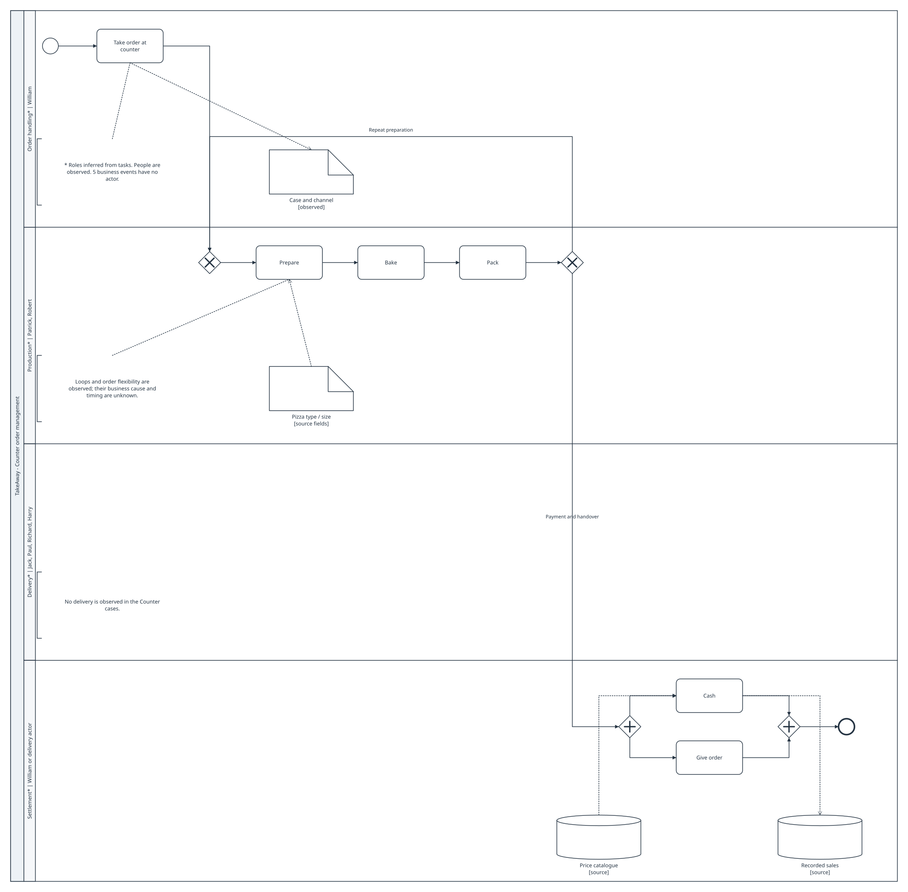
BPMN Comptoir. Vue d’ensemble ; l’annexe vectorielle et le fichier SVG permettent la lecture détaillée avec zoom.
| Fichier modifiable | Échange standard | Figure vectorielle |
|---|
| takeaway-counter.opx | takeaway-counter.bpmn | takeaway-counter.svg |
2.2 Commande par téléphone
La commande est enregistrée par téléphone, puis suit la production Prepare–Bake–Pack avec possibilité de répétition. Une branche ajoute Plan puis Deliver avant les activités de règlement et de remise.
La livraison est enregistrée dans 65 des 109 cas. Les 44 autres ne contiennent pas Plan/Deliver : ils sont interprétés comme un retrait dans le modèle organisationnel, avec cette interprétation signalée comme hypothèse.
Les cycles de préparation sont répartis ainsi : 91 cas à un cycle, 11 à deux, 7 à trois. Cash est observé avant la remise dans 48 cas, après dans 61 cas.
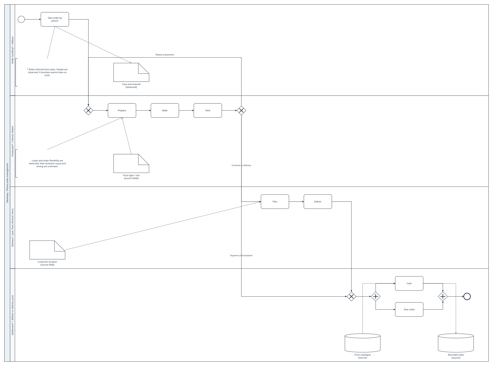
BPMN Téléphone. Vue d’ensemble ; l’annexe vectorielle et le fichier SVG permettent la lecture détaillée avec zoom.
| Fichier modifiable | Échange standard | Figure vectorielle |
|---|
| takeaway-phone.opx | takeaway-phone.bpmn | takeaway-phone.svg |
2.3 Commande par internet
Receive order by internet est suivi d’Approve order. Une voie poursuit directement ; une autre passe par Contact customer puis soit Modify order, soit Cancel order. Une annulation termine le traitement sans préparation ni livraison.
Sur 185 cas, 21 comportent un contact, 18 une modification et 3 une annulation. Les 164 autres ne comportent pas de contact. Les 182 cas non annulés contiennent une livraison.
Les 182 cas préparés présentent 112 séquences à un cycle, 61 à deux et 9 à trois. Le règlement et la remise restent tous deux nécessaires dans le chemin non annulé.
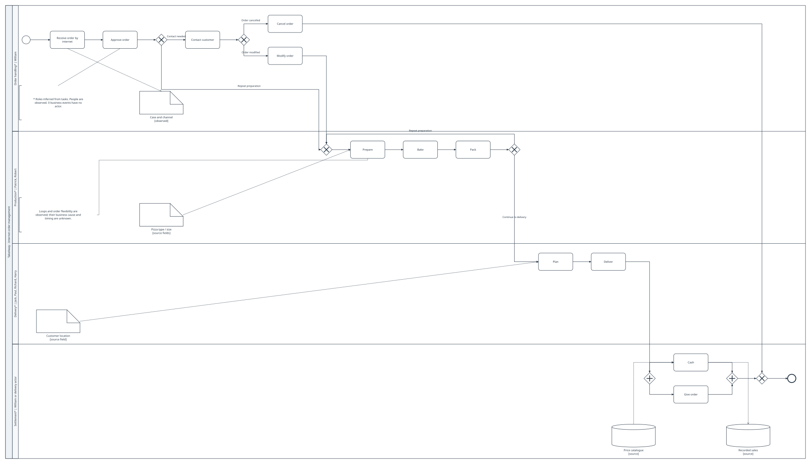
BPMN Internet. Vue d’ensemble ; l’annexe vectorielle et le fichier SVG permettent la lecture détaillée avec zoom.
| Fichier modifiable | Échange standard | Figure vectorielle |
|---|
| takeaway-internet.opx | takeaway-internet.bpmn | takeaway-internet.svg |
3. Intégration dans un processus global
Le modèle global possède un seul participant Pizzeria, un démarrage commun, une passerelle exclusive de sélection du canal et une fin commune. Les trois sous-graphes de contrôle sont reliés à ces éléments communs ; les mêmes catégories de rôles et les mêmes interfaces de données organisent l’ensemble.
Une tâche n’est pas fusionnée avec une autre uniquement parce que son libellé est identique. Cette précaution évite de créer un scénario hybride, par exemple une commande au comptoir qui emprunterait les décisions de contact/annulation propres à Internet. La mutualisation porte ici sur le participant, la sélection d’entrée, la complétion, les rôles et les informations ; les contraintes propres à chaque canal sont conservées.
Les conditions nommées des branches sont des indications de lecture et de configuration. Elles ne constituent pas un moteur de décision exécutable ni la preuve d’une variable enregistrée dans les traces. La vérification porte sur le contrôle de flux et les activités observables.
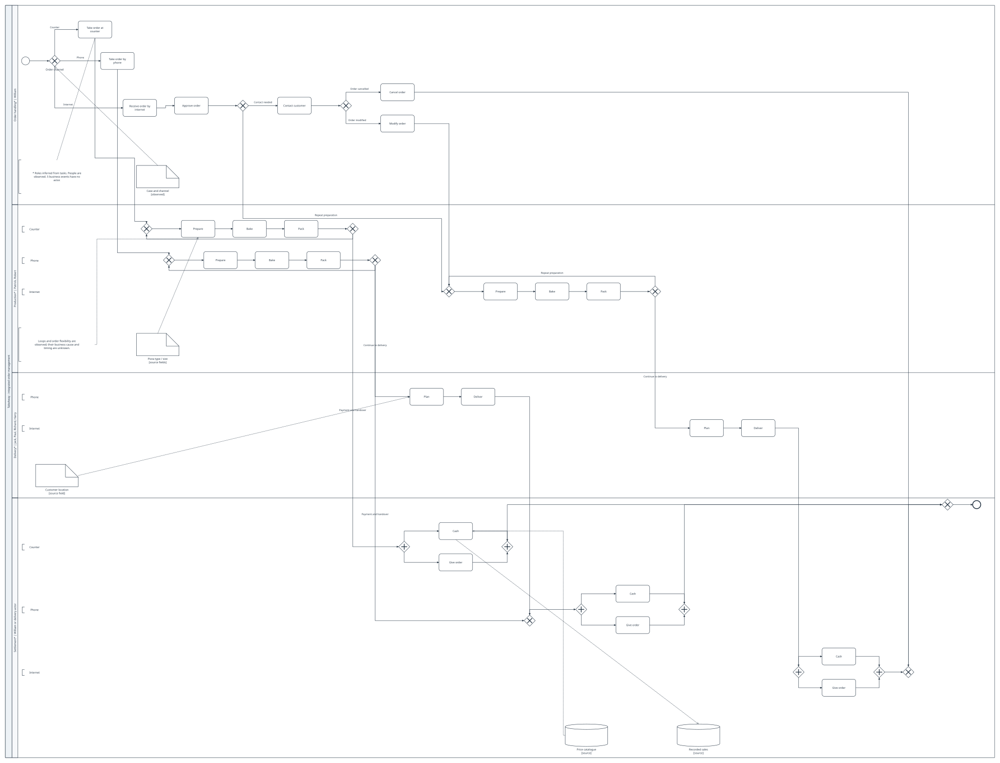
Processus global connecté : trois branches de canal dans un participant partagé. Le modèle détaillé est également fourni en OPX, BPMN 2.0 et SVG.
L’intégration est contrôlée par rejeu des 327 traces projetées ainsi que par des contre-exemples sélectionnés : sauts de tâches requises, défaut de règlement/remise et passages non autorisés entre canaux. Ces essais complètent les contrôles structurels et les allers-retours de formats ; ils ne constituent pas une preuve exhaustive de précision.
4. Dimensions organisationnelle et informationnelle
4.1 Rôles et affectations
Les noms de personnes proviennent des colonnes Actor. Les intitulés de couloirs marqués d’un astérisque sont des regroupements de modélisation, proposés à partir des activités observées ; ils ne sont pas présentés comme un organigramme officiel.
| Couloir proposé | Évidence / responsabilité |
|---|
| Gestion de commande* | William : prises/réception de commande, approbation, contact, modification et annulation selon le canal |
| Production* | Patrick et Robert : Prepare, Bake, Pack ; cinq Prepare du comptoir restent sans acteur renseigné |
| Livraison* | Jack, Paul, Richard et Harry : affectations observées aux activités de planification/livraison |
| Règlement et remise* | William ou acteur de livraison selon les traces et le canal ; les affectations exactes figurent dans la documentation de chaque tâche |
Un couloir regroupe une responsabilité ; il n’impose ni ressource unique, ni capacité, ni temps de travail. Les attributs de coût et de durée des tâches restent à leur valeur technique par défaut faute de mesures : ces zéros ne sont pas utilisés comme des estimations opérationnelles.
Le contrôle des cas livrés montre que, pour chacune des 65 livraisons Phone et des 182 livraisons Internet, un même acteur réalise Plan, Deliver, Cash et Give order. Cette continuité observée explique l’affectation du règlement/remise à l’acteur de livraison. Les deux couloirs représentent des responsabilités, pas nécessairement deux employés différents ; les disponibilités et contraintes de ressources restent hors du moteur de contrôle.
4.2 Informations et associations
Les objets et magasins de données expriment une configuration informationnelle documentée. Les attributs enregistrés viennent des feuilles complémentaires ; les associations avec les tâches sont une interprétation explicitement proposée, car le journal ne contient pas de traces de lecture/écriture de données.
Dans le modèle global, certaines associations sont représentatives afin de garder le schéma lisible. La documentation des objets précise leur portée partagée entre les branches et conserve les affectations propres à chaque canal.
| Information | Attributs / origine | Usage proposé et limite |
|---|
| Commande / canal | CaseId et activités du CSV ; mode connu par le fichier source | Piloter le choix du canal ; pas de clé de jointure créée vers Sales |
| Gabarit de scénario | CaseStructure ; StructureId local dans Sales | Décrire les scénarios complémentaires ; correspondance Start/Prepare de Phone documentée |
| Vente enregistrée | Id, StructureId, Pizza Type, Pizza Size, Revenue, Cost | Conserver le relevé commercial sans assimiler une ligne à un panier ou à une commande du journal |
| Profil déclaré | Customer Type, Customer Location, Weekday | Segmenter les observations ; aucune identité unique ni date complète n’est déduite |
| Retour de satisfaction | Satisfaction, éventuellement absente | Évaluer les scores observés et leur couverture, en distinguant absence et zéro |
| Catalogue pizza | PizzasInfo : six types × trois tailles, revenus/coûts de référence | Documenter la production et les montants ; unité monétaire non indiquée |
Les libellés d’activité et les champs d’origine restent traçables dans evidence.json. Les coquilles et gabarits anciens sont signalés, sans créer de relation commerciale ou informationnelle non démontrée.
5. Analyse quantitative
5.1 Clients, transactions et unités de comptage
Le tableau suivant répond au dénombrement par type en comptant les mentions de type sur les lignes de vente. En l’absence d’identifiant de personne, il ne permet pas de compter des clients distincts. Les 463 lignes constituent le volume commercial observable ; 327 est le nombre séparé de cas événementiels. Le nombre exact de paniers/transactions reliant ces sources n’est pas identifiable.
| Type enregistré | Lignes | Part de l’échantillon | Satisfaction observée |
|---|
| Adult | 76 | 16,41 % | 2,87 (n=76) |
| Senior | 9 | 1,94 % | 2,56 (n=9) |
| Student | 296 | 63,93 % | 2,52 (n=293) |
| Teenager | 82 | 17,71 % | 3,40 (n=82) |
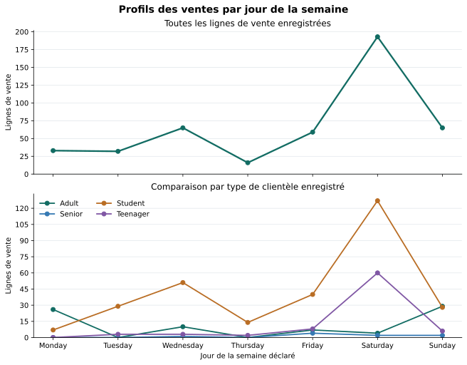
Nombre de lignes de vente par jour déclaré, puis par type de clientèle enregistré. Les sept jours sont des catégories agrégées : aucune date, transaction ou identité client unique n'est reconstituée.
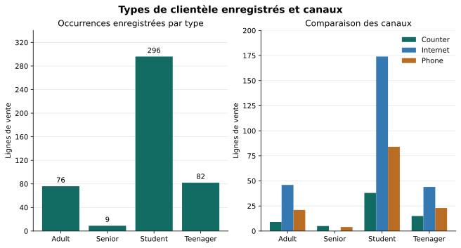
Comparaison des occurrences de chaque type de clientèle, globalement et par canal. Ces effectifs ne dénombrent pas des personnes distinctes.
L’axe lundi–dimanche est un profil par catégorie de jour, calculé sur toutes les observations disponibles. Il ne montre pas une progression datée et ne permet pas de calculer une croissance entre semaines ou une fréquentation quotidienne de clients uniques.
5.2 Chiffre d’affaires, coûts et bénéfice
| Canal | Ventes | CA (u.m.) | Coûts | Bénéfice | Bénéfice / CA |
|---|
| Counter | 67 | 971,00 | 776,00 | 195,00 | 20,08 % |
| Internet | 264 | 3 919,00 | 3 107,00 | 812,00 | 20,72 % |
| Phone | 132 | 1 905,00 | 1 537,00 | 368,00 | 19,32 % |
| Total | 463 | 6 795,00 | 5 420,00 | 1 375,00 | 20,24 % |
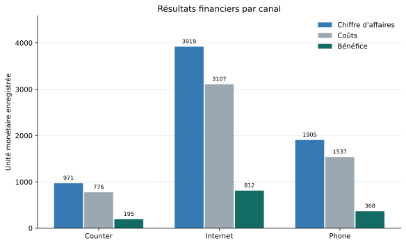
Chiffre d'affaires, coûts et bénéfice calculés en centièmes entiers de l'unité enregistrée. Aucun symbole de devise n'est supposé.
Le bénéfice calculé correspond à la différence entre les revenus et les seuls coûts enregistrés. Les parts par canal ne constituent pas une mesure de rentabilité nette après frais fixes ou de livraison. Une comparaison de canaux doit donc être complétée par ces coûts si le gérant souhaite une décision économique complète.
5.2.1 Annulations et sensibilité financière
Le rapprochement interne au classeur Internet identifie trois lignes Sales (Id 18, 61 et 135) dont StructureId = 7 référence le scénario Contact customer → Cancel order. Elles portent pourtant des valeurs mises en cache de Revenue et Cost, respectivement 36,00 et 28,00 u.m. au total. Ces champs ne suffisent donc pas à établir des encaissements ou coûts effectivement réalisés. Ce rapprochement de gabarit ne permet pas d’identifier les CaseId correspondants.
| Périmètre | Lignes | Revenue | Cost | Différence |
|---|
| Tous les enregistrements (réponse de base) | 463 | 6 795,00 | 5 420,00 | 1 375,00 |
| Lignes liées au gabarit d’annulation | 3 | 36,00 | 28,00 | 8,00 |
| Sensibilité : hors ces trois lignes | 460 | 6 759,00 | 5 392,00 | 1 367,00 |
La dernière ligne est une sensibilité sous l’hypothèse d’exclure les montants du gabarit d’annulation ; elle ne remplace pas les totaux de base et n’est pas une correction comptable validée. Les sources ne documentent ni statut de facturation, ni remboursement, ni règle d’imputation des coûts. Le diagnostic détaillé est joint et les enregistrements d’origine sont conservés.
5.3 Profils de vente selon le jour
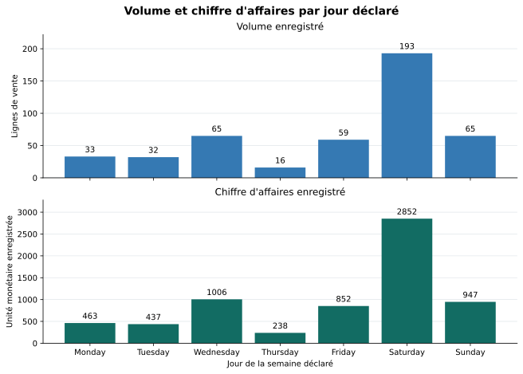
Comparaison des lignes de vente et du chiffre d'affaires pour les sept jours de la semaine ; il ne s'agit pas d'une série quotidienne datée.
| Jour | Ventes | CA (u.m.) | Coûts | Bénéfice | Bénéfice / CA |
|---|
| Lundi | 33 | 463,00 | 367,00 | 96,00 | 20,73 % |
| Mardi | 32 | 437,00 | 341,00 | 96,00 | 21,97 % |
| Mercredi | 65 | 1 006,00 | 805,00 | 201,00 | 19,98 % |
| Jeudi | 16 | 238,00 | 193,00 | 45,00 | 18,91 % |
| Vendredi | 59 | 852,00 | 682,00 | 170,00 | 19,95 % |
| Samedi | 193 | 2 852,00 | 2 271,00 | 581,00 | 20,37 % |
| Dimanche | 65 | 947,00 | 761,00 | 186,00 | 19,64 % |
Saturday représente 193 lignes sur 463, soit 41,68 % de l’échantillon ; Saturday et Sunday réunis en représentent 55,72 %. Cette concentration invite à vérifier l’adéquation des moyens de préparation aux jours de forte demande sur une période datée plus longue. Elle ne suffit pas à établir une règle de capacité valable pour toutes les semaines.
5.4 Répartition géographique
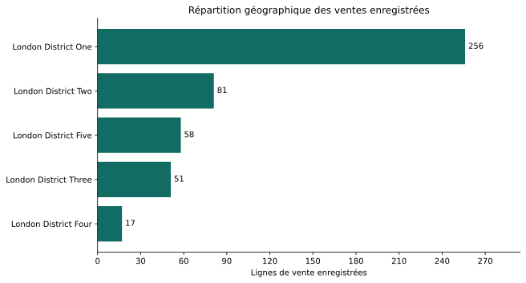
Répartition des lignes selon le district déclaré. Les libellés sources sont conservés ; aucune position cartographique ou population locale n'est inférée.
| Localisation enregistrée | Ventes | CA (u.m.) | Coûts | Bénéfice | Bénéfice / CA |
|---|
| London District Five | 58 | 897,00 | 720,00 | 177,00 | 19,73 % |
| London District Four | 17 | 246,00 | 199,00 | 47,00 | 19,11 % |
| London District One | 256 | 3 727,00 | 2 973,00 | 754,00 | 20,23 % |
| London District Three | 51 | 744,00 | 590,00 | 154,00 | 20,70 % |
| London District Two | 81 | 1 181,00 | 938,00 | 243,00 | 20,58 % |
London District One regroupe 256 lignes, soit 55,29 % de l’échantillon. La source fournit des catégories géographiques, pas des coordonnées ni des distances : une répartition par libellé est pertinente, alors qu’une carte de zones ou un coût kilométrique serait inventé.
5.5 Satisfaction
La somme des 460 scores observés est 1 258 ; la moyenne pondérée est 2,734783. Les 3 valeurs manquantes sont exclues du dénominateur. Deux valeurs nulles sont de vrais scores zéro et sont conservées. Les trois absences correspondent précisément aux lignes liées au gabarit d’annulation Internet : elles peuvent être non applicables plutôt que des oublis de collecte. L’étendue observée ne suffit pas à documenter le barème du questionnaire.
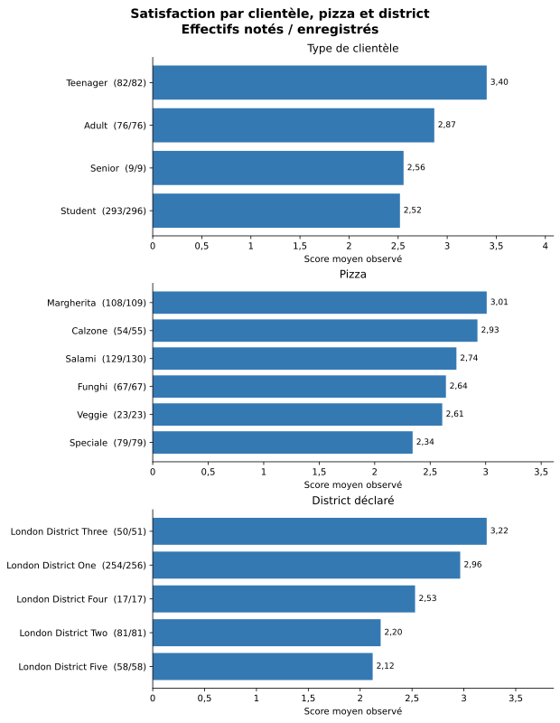
Moyennes des scores présents uniquement. Les notes zéro restent des observations, les notes absentes sont exclues et les effectifs notés sont indiqués. L'échelle de notation n'est pas supposée.
| Catégorie de clientèle | Moyenne | Observés | Manquants |
|---|
| Adult | 2,8684 | 76 | 0 |
| Senior | 2,5556 | 9 | 0 |
| Student | 2,5188 | 293 | 3 |
| Teenager | 3,4024 | 82 | 0 |
| Type de pizza | Moyenne | Observés | Manquants |
|---|
| Salami | 2,7364 | 129 | 1 |
| Margherita | 3,0093 | 108 | 1 |
| Speciale | 2,3418 | 79 | 0 |
| Funghi | 2,6418 | 67 | 0 |
| Calzone | 2,9259 | 54 | 1 |
| Veggie | 2,6087 | 23 | 0 |
| Région enregistrée | Moyenne | Observés | Manquants |
|---|
| London District Five | 2,1207 | 58 | 0 |
| London District Four | 2,5294 | 17 | 0 |
| London District One | 2,9646 | 254 | 2 |
| London District Three | 3,2200 | 50 | 1 |
| London District Two | 2,1975 | 81 | 0 |
Ces moyennes décrivent des sous-ensembles de tailles inégales. Elles n’établissent pas une causalité entre pizza, lieu, type de clientèle et satisfaction. Les petits groupes, notamment Senior, appellent une lecture prudente et la couverture des scores doit rester visible.
5.6 Palmarès des pizzas
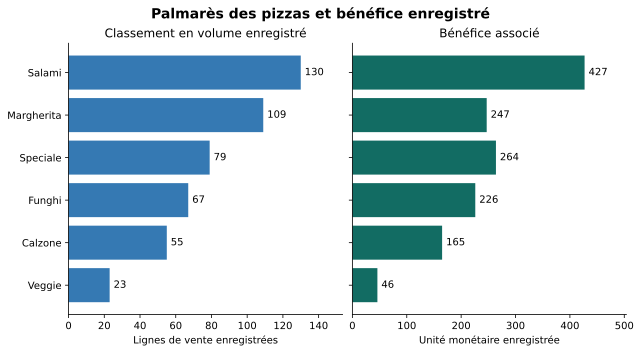
Classement par nombre de lignes de vente, accompagné du bénéfice par pizza. Une ligne n'est assimilée ni à un client unique ni à une quantité physique non documentée.
| Pizza | Ventes | CA (u.m.) | Coûts | Bénéfice | Bénéfice / CA |
|---|
| Salami | 130 | 2 211,00 | 1 784,00 | 427,00 | 19,31 % |
| Margherita | 109 | 1 186,00 | 939,00 | 247,00 | 20,83 % |
| Speciale | 79 | 1 418,00 | 1 154,00 | 264,00 | 18,62 % |
| Funghi | 67 | 1 026,00 | 800,00 | 226,00 | 22,03 % |
| Calzone | 55 | 701,00 | 536,00 | 165,00 | 23,54 % |
| Veggie | 23 | 253,00 | 207,00 | 46,00 | 18,18 % |
Le classement utilise le nombre de lignes de vente ; les ex æquo partagent un rang. Le CA puis le libellé stabilisent leur ordre d’affichage. Salami arrive en tête du volume global avec 130 lignes, devant Margherita (109). Les classements complets par type de client et jour sont joints en CSV.
| Type de client | Lundi | Mardi | Mercredi | Jeudi | Vendredi | Samedi | Dimanche |
|---|
| Adult | Salami (8) | Aucune observation | Funghi (5) | Aucune observation | Speciale (3) | Speciale, Salami, Margherita, Veggie (1) | Margherita (8) |
| Senior | Aucune observation | Aucune observation | Veggie (1) | Aucune observation | Speciale (2) | Calzone, Margherita (1) | Calzone, Margherita (1) |
| Student | Margherita (3) | Salami (10) | Salami (13) | Salami (7) | Margherita (16) | Salami (35) | Salami (12) |
| Teenager | Aucune observation | Salami, Calzone, Margherita (1) | Margherita (2) | Speciale, Salami (1) | Speciale (3) | Salami (19) | Margherita (3) |
Lecture du tableau : pizza(s) de premier rang pour chaque type et jour, suivie(s) du nombre de lignes de chacune. « Aucune observation » signifie qu’aucune vente du segment n’est enregistrée, pas qu’une pizza a été proposée puis refusée.
6. Deux KPI proposés au gérant
6.1 Part du bénéfice dans le CA enregistré
KPI 1 = (CA − coûts enregistrés) / CA. Valeur globale : 20,24 %, calculée avec 1 375,00 / 6 795,00. Cet indicateur est sans dimension et reste non défini si le CA est nul.
Il complète le volume : vendre davantage ne garantit pas une meilleure contribution au bénéfice enregistré. Son suivi par canal et pizza aide à repérer un mix moins rémunérateur ou une variation de coût. Un seuil de pilotage autour de 20 % peut servir de point de discussion à partir de cet échantillon ; ce n’est ni un objectif imposé ni une référence du secteur. Avant de décider un prix, il faut intégrer les charges absentes des fichiers.
6.2 Taux de satisfaction renseignée
KPI 2 = nombre de lignes avec un score / nombre de lignes de vente. Valeur globale : 99,35 %, soit 460 / 463. Un score zéro reste renseigné ; un score absent ne l’est pas.
Ce KPI mesure la couverture de la donnée qui soutient les moyennes de satisfaction. Il évite d’interpréter une moyenne favorable ou défavorable comme représentative lorsque les retours manquent. Les trois absences sont dans le gabarit d’annulation Internet : il faut d’abord vérifier l’applicabilité de la note, puis distinguer « non applicable » de « non répondu », sans fabriquer de score. Sous l’hypothèse d’un périmètre hors annulations, les 460 lignes restantes sont toutes notées, soit 100 % ; cette sensibilité ne change pas le dénominateur du KPI de base.
| Canal | Bénéfice / CA | Couverture satisfaction | Scores absents |
|---|
| Counter | 20,08 % | 100,00 % | 0 |
| Internet | 20,72 % | 98,86 % | 3 |
| Phone | 19,32 % | 100,00 % | 0 |
Pour une utilisation opérationnelle future, les deux KPI doivent être recalculés à chaque export daté, avec leur périmètre et leurs dénominateurs. La cadence, les seuils et les responsables de suivi sont des propositions à convenir avec le gérant ; les sources actuelles ne les imposent pas.
7. Interprétations et pistes d’amélioration
- Capacité de préparation : confronter la forte présence des lignes Saturday au planning réel et à des dates d’exploitation avant de changer les effectifs. Aucune durée de tâche n’est déduite du seul ordre des événements.
- Canaux : suivre simultanément volume et part du bénéfice dans le CA ; isoler les frais de livraison, commissions et charges fixes pour une analyse nette qui n’est pas possible aujourd’hui.
- Production : instrumenter la raison des retours Prepare–Bake–Pack avant de les qualifier de reprises, de défauts ou de pizzas supplémentaires.
- Clientèle : ajouter une clé de transaction et un identifiant de client adapté au besoin de comptage, ainsi que des dates complètes, si le gérant veut mesurer clients uniques, panier moyen et évolution chronologique.
- Satisfaction : distinguer la non-applicabilité éventuelle des notes en cas d’annulation et la non-réponse ; documenter le barème, conserver les scores zéro et publier les effectifs qui soutiennent chaque moyenne.
8. Vérifications et reproductibilité
Le générateur natif utilise les types, importeurs, conversions, exports et analyses d’Open Process. Il vérifie les modèles et leurs allers-retours OPX/BPMN XML, le rejeu des traces projetées, des contre-exemples sélectionnés et une analyse bornée de bonne formation. Les résultats détaillés se trouvent dans validation.json ; un résultat borné ou indécidable n’est pas transformé en preuve générale.
| Modèle | Nœuds | Flux | Cas acceptés | Analyse du réseau |
|---|
| TakeAway - Counter order management | 19 | 19 | 33 | Sound |
| TakeAway - Phone order management | 22 | 24 | 109 | Sound |
| TakeAway - Internet order management | 28 | 31 | 185 | Sound |
| TakeAway - integrated order management | 61 | 63 | 327 | Sound |
L’analyse bornée renvoie Sound pour les quatre réseaux de contrôle encodés ; les 15 contre-exemples de contrôle et de mélange de canaux retenus sont rejetés. Ce résultat porte sur l’abstraction de flux modélisée, avec ses hypothèses, et non sur les disponibilités humaines ou l’exécution réelle des échanges d’information.
Les quatre fichiers BPMN XML passent aussi la validation contre les cinq schémas normatifs OMG BPMN 2.0.2, sans diagnostic, avec libxml2 2.15.2. Le relevé joint conserve les URL et empreintes des schémas ainsi que les empreintes des fichiers contrôlés. Cette validation porte sur la grammaire XML et ses types ; elle ne remplace pas les contrôles de comportement et ne garantit pas toutes les fonctions de tout éditeur BPMN.
Les figures et tables Python sont recalculées indépendamment à partir des montants entiers du document Sales. Leurs totaux et agrégations sont confrontés aux CSV natifs. Les empreintes SHA-256 des entrées et du code de publication figurent dans le manifeste joint ; les empreintes FNV du générateur sont identifiées comme de simples empreintes reproductibles, sans prétention cryptographique.
| Vérification | Résultat enregistré |
|---|
| Tests logiciels | 351 tests réussis : 154 application, 181 cœur, 16 intégration ; étape rustdoc réussie (aucun doctest). |
| Compilation native | Construction debug de tout le workspace et de toutes les cibles ; contrôle natif op-app réussi. |
| WebAssembly | Cible wasm32-unknown-unknown contrôlée et construction Trunk debug sous /app/ réussie. |
| Navigateur | Firefox : Web Workers, 7 jours, 2 types de clients, filtre exact de scénario, zéro/absence, annulation de tâche et erreurs validés. |
| BPMN et traces | 327 cas acceptés par canal, global et aller-retour XML ; 15 contre-exemples sélectionnés rejetés. |
| Structure et géométrie | 4 réseaux Sound dans le contrôle borné ; zéro chevauchement et zéro croisement de flux avec des nœuds non reliés. |
| Schémas officiels | 4 fichiers XML valides contre les 5 schémas normatifs OMG BPMN 2.0.2, sans diagnostic. |
| Analyse indépendante | 8 exports natifs principaux concordent, plus le sous-ensemble Internet scénario 7 ; 463 lignes contrôlées dans leurs propres classeurs. |
| Périmètre | Vérifications locales Linux/Firefox ; pas de certification multi-système, de publication distante ou de preuve de complétude du comportement. |
Les instructions de reproduction et la liste exacte des livrables accompagnent le rapport. Les vérifications locales ne valent pas une exécution de toute la matrice CI sur plusieurs systèmes ni une exécution métier réelle.
9. Conclusion
Les trois processus observés et leur intégration sont livrés sous forme modifiable. Les dimensions de responsabilité et d’information sont configurées en distinguant ce qui est enregistré de ce qui est proposé. L’analyse quantitative répond aux questions avec les unités réellement disponibles, deux KPI explicités et les limites qui conditionnent leur interprétation. L’étape suivante, côté pizzeria, serait d’enrichir l’instrumentation avant de conclure sur les clients uniques, les paniers, les délais ou les capacités.
Annexes et fichiers de preuve
- Quatre modèles : takeaway-counter, takeaway-phone, takeaway-internet, takeaway-global, chacun en .opx, .bpmn et .svg.
- evidence.json : feuilles complémentaires, scénarios, acteurs, provenance, hypothèses et limites ; validation.json : contrôles des modèles et des traces.
- Étude Sales .opx, agrégations et séries/KPI CSV natifs ; tables et figures indépendantes sous analysis/.
- Les quatre pages vectorielles grand format qui suivent le corps du PDF sont les diagrammes complets. Elles sont destinées à la lecture avec zoom, sans perte de qualité.